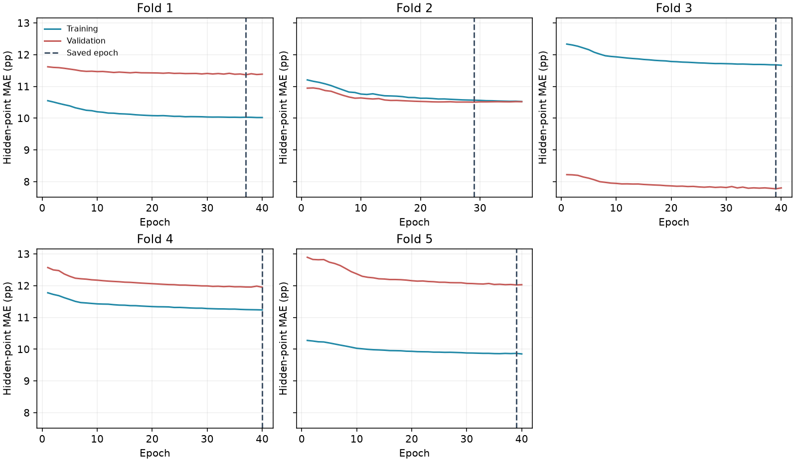

本轮训练设备为 cuda:0 (NVIDIA GeForce RTX 5080)。
03 先把一部分测量藏起来。04 使用同一份掩码，先对每条区域曲线做线性插值。接下来，在每个缺失时刻问该节点的一圈直接邻居，应该把这个初值调高还是调低。
邻接边的两个方向各有一条消息。模型同时看目标和邻居的线性估计、该时刻是否实测、在扫描中的时间位置、离前后观测点的时间差、前后观测信号的差值、首帧相对亮度和区域中心距离。它为每条消息输出一个权重和一项可正可负的建议修正。同一目标收到的权重之和为 1。每条消息的贡献等于权重乘建议修正。比如初值是 +32%，两个邻居加权后的贡献是 +2 和 −1 个百分点，最终估计为 +33%。没有邻居的节点保留线性估计。
整帧缺失时，邻居在同一时刻只能提供从各自曲线算出的线性估计。局部缺失时，区域外邻居还能提供同一时刻的实测值。对已观测点直接保留测量。训练时只用被藏的测量值计算误差，逐折学习边上的权重与修正。
同一患者的两次访视总在同一组。每折用训练患者更新参数，再用独立的验证患者选保存轮次。测试患者的结果由 05 计算，每位患者恰好在一折担任测试。
| 折 | 训练患者 | 验证患者 | 测试患者 | 保存轮次 | 验证 MAE (百分点) |
|---|---|---|---|---|---|
| 1 | BC06, BC08, BC10, BC12, BC14, BC15 | BC01, BC13 | BC05, BC16 | 37 | 11.37 |
| 2 | BC05, BC06, BC10, BC12, BC14, BC16 | BC08, BC15 | BC01, BC13 | 29 | 10.51 |
| 3 | BC01, BC05, BC10, BC13, BC14, BC16 | BC06, BC12 | BC08, BC15 | 39 | 7.78 |
| 4 | BC01, BC05, BC08, BC13, BC15, BC16 | BC10, BC14 | BC06, BC12 | 40 | 11.95 |
| 5 | BC01, BC06, BC08, BC12, BC13, BC15 | BC05, BC16 | BC10, BC14 | 39 | 12.02 |
